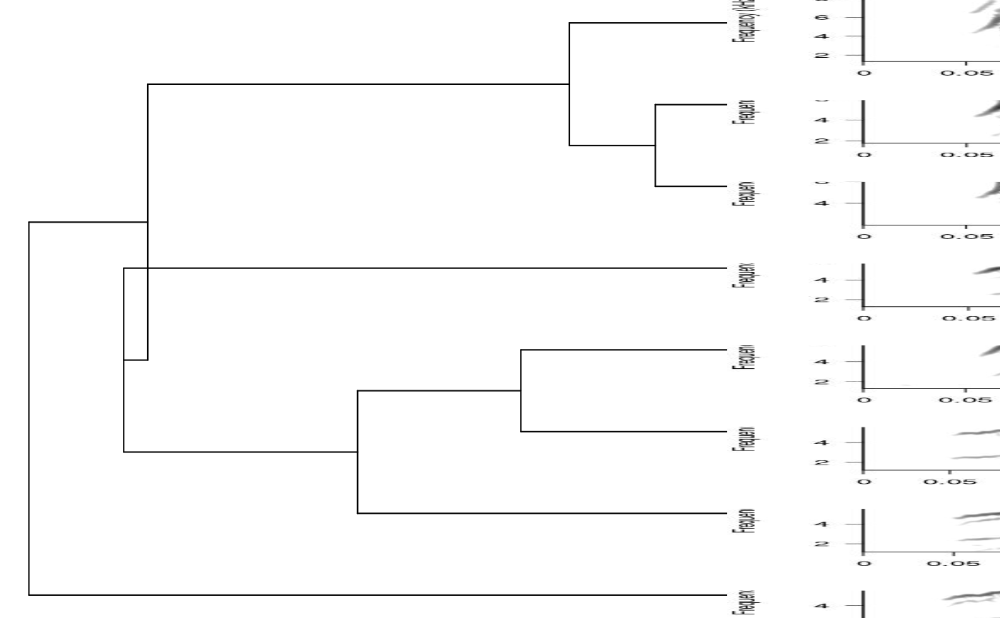
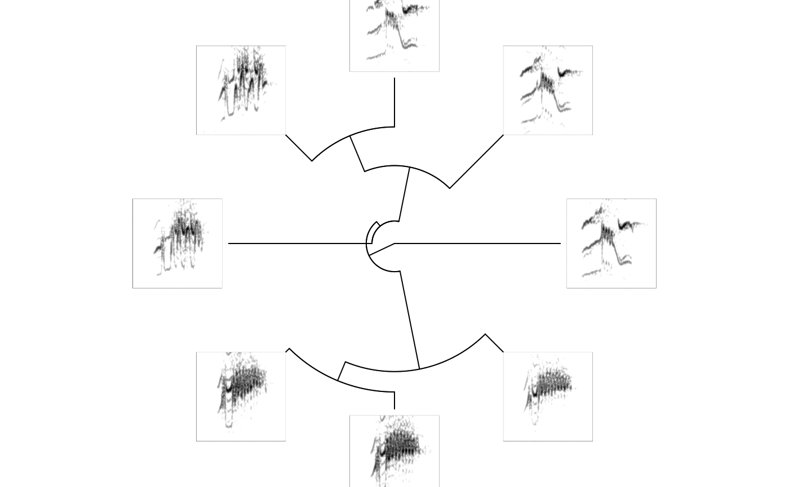
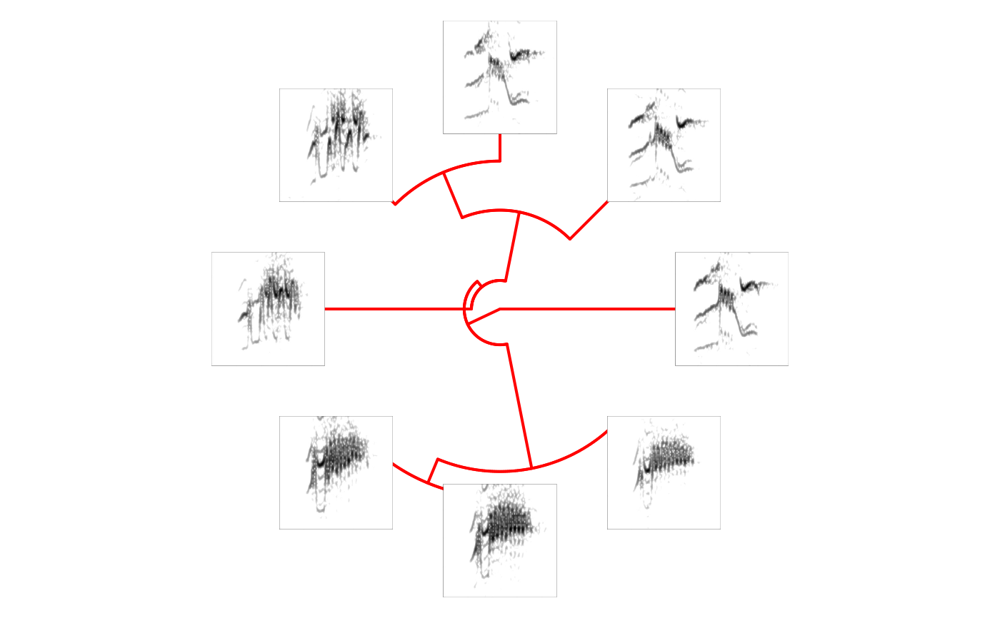
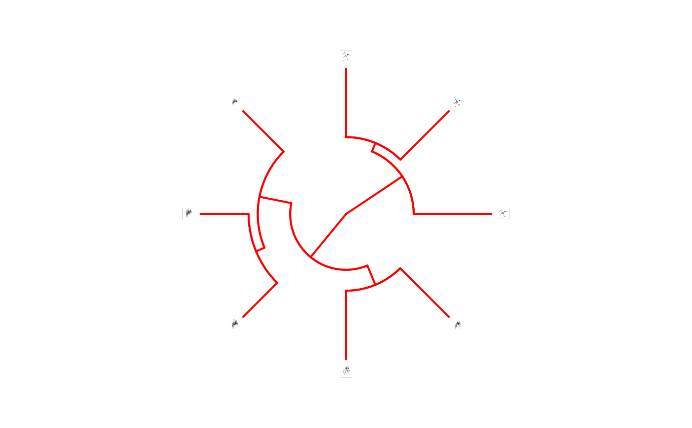

Add spectrograms onto phylogenetic trees
phylo_spectro.Rdphylo_spectro Add spectrograms to the tips of an objects of class phylo.
phylo_spectro(X, tree, type = "fan", par.mar = rep(1, 4), size = 1, offset = 0, path = NULL, ladder = NULL, horizontal = TRUE, ...)
Arguments
| X | 'selection_table', 'extended_selection_table' or data frame containing columns for sound file name
(sound.files), selection number (selec), and start and end time of signals (start and end).
'top.freq' and 'bottom.freq' columns are optional. In addition, the data frame must include the column 'tip.label' that contains the names of the tip labels found in the tree (e.g. ' |
|---|---|
| tree | Object of class 'phylo' (i.e. a phylogenetic tree). Ultrametric trees may produce better results.
If |
| type | Character string of length 1 specifying the type of phylogeny to be drawn
(as in |
| par.mar | Numeric vector with 4 elements, default is |
| size | Numeric vector of length 1 controlling the relative size of spectrograms. Higher numbers increase the height of spectrograms. Default is 1.
Numbers between range |
| offset | Numeric vector of length 1 controlling the space between tips and spectrograms. Default is 0. |
| path | Character string containing the directory path where the sound files are located.
If |
| ladder | Character string controling whether the phylogeny is ladderized (i.e. the internal structure of the
tree is reorganized to get the ladderized effect when plotted). Only 'left' of 'right' values are accepted. Default is
|
| horizontal | Logical. Controls whether spectrograms in a fan phylogeny are place in a horizontal position
|
| ... | Additional arguments to be passed to the internal spectrogram
creating function ( |
Value
A phylogenetic tree with spectrograms on tree tips is plotted in the current graphical device.
Details
The function add the spectrograms of sounds annotated in a selection table ('X' argument) onto the tips of a phylogenetic tree.
The 'tip.label' column in 'X' is used to match spectrograms and tree tips. The function uses internally the plot.phylo function to plot the tree
and the specreator function to create the spectrograms. Arguments for both of these functions
can be provided for further customization. Fitting spectrograms
References
Araya-Salas, M., & Smith-Vidaurre, G. (2017). warbleR: An R package to streamline analysis of animal acoustic signals. Methods in Ecology and Evolution, 8(2), 184-191.
See also
Other spectrogram creators: color.spectro,
dfDTW, dfts,
ffDTW, ffts,
multi_DTW, snrspecs,
sp.en.ts, specreator,
trackfreqs
Examples
{#> Error: <text>:3:0: unexpected end of input #> 1: { #> 2: #> ^# First set empty folder # setwd(tempdir()) # save example sound files data(list = c("Phae.long1", "Phae.long2", "Phae.long3", "selec.table")) writeWave(Phae.long1,"Phae.long1.wav") writeWave(Phae.long2,"Phae.long2.wav") writeWave(Phae.long3,"Phae.long3.wav") # set spectrogram options (can be done at the phylo_spectro() function too) warbleR_options(wl = 200, ovlp = 90, flim = "frange") # subset example selection table X <- selec.table[1:8, ] # create random tree (need ape to be installed) set.seed(1) tree <- ape::rtree(nrow(X)) # Force tree to be ultrametric tree <- ape::chronoMPL(tree) # add tip label column to example selection table (just for the sake of the example) X$tip.label <- tree$tip.label # print phylogram with spectros phylo_spectro(X = X, tree = tree, par.mar = c(0, 0, 0, 8), size = 2)# no margin in spectrograms and showing tip labels (higher offset) phylo_spectro(X = X, tree = tree, offset = 0.1, par.mar = c(0, 0, 0, 6), inner.mar = rep(0, 4), size = 2)# print fan tree and no margin in spectrograms phylo_spectro(X = X, tree = tree, offset = 0.6, par.mar = rep(3, 4), inner.mar = rep(0, 4), size = 2, type = "fan", show.tip.label = FALSE)# changing edge color and witdh phylo_spectro(X = X, tree = tree, offset = 0.2, par.mar = rep(3, 4), inner.mar = rep(0, 4), size = 2, type = "fan", show.tip.label = FALSE, edge.color = "red", edge.width = 2)#> creating templates: #> | | 0 % ~calculating |+++++++ | 12% ~00s |+++++++++++++ | 25% ~00s |+++++++++++++++++++ | 38% ~00s |+++++++++++++++++++++++++ | 50% ~00s |++++++++++++++++++++++++++++++++ | 62% ~00s |++++++++++++++++++++++++++++++++++++++ | 75% ~00s |++++++++++++++++++++++++++++++++++++++++++++ | 88% ~00s |++++++++++++++++++++++++++++++++++++++++++++++++++| 100% elapsed = 00s #> running cross-correlation: #> | | 0 % ~calculating |++++++++ | 14% ~03s |+++++++++++++++ | 29% ~01s |++++++++++++++++++++++ | 43% ~01s |+++++++++++++++++++++++++++++ | 57% ~01s |++++++++++++++++++++++++++++++++++++ | 71% ~00s |+++++++++++++++++++++++++++++++++++++++++++ | 86% ~00s |++++++++++++++++++++++++++++++++++++++++++++++++++| 100% elapsed = 02sxc.tree <- ape::chronoMPL(ape::as.phylo(hclust(as.dist(1 - xcorr_mat)))) X$tip.label <- xc.tree$tip.label phylo_spectro(X = X, tree = xc.tree, offset = 0.03, par.mar = rep(3, 4), inner.mar = rep(0, 4), size = 0.3, type = "fan", show.tip.label = FALSE, edge.color = "red", edge.width = 2)}#> Error: <text>:1:1: unexpected '}' #> 1: } #> ^